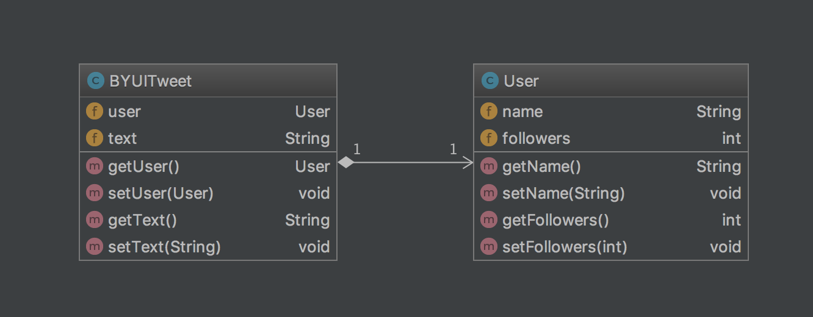

03 Prove
JSON APIs
Objectives
Understand what an API is and how they're used.
Learn to parse a JSON response from an API.
Learn to store and access data in a Map.
APIs
Companies with data-driven websites will often create APIs, (Application Programming Interfaces) to allow people to programmatically pull data from their site.
Facebook, Twitter, Google Translate, and Ebay, are just a few examples of sites that provide public APIs.
Developers use APIs for a variety of reasons. Often, they want to pull specific types of data for data-mining. Other times, they might want to create their own applications that use the services of those companies, such as an iOS app that allows you to sell things on Ebay.
While every API is different, the general sequence of steps is usually the same:
-
Sign up for a developer account (sometimes called an API Key) with the organization whose API you want to access and obtain authentication credentials.
-
Send an HTTP request to authenticate with the API using the authentication credentials you were given and receive an authentication token.
-
Use that authentication token to make API requests via HTTP to specific URLs (called "end points") which allow you to retrieve the data that you're interested in.
-
The data is returned in a structured format. The most common data format for APIs is JSON.
Assignment
You will write a program that uses the Twitter API to retrieve tweets made with the hash tag #byui. You'll first display the tweets in order by the user's name, then in order by the number of followers the user has.
Warning
This assignment is more difficult than any of your past assignments. I have purposefully left out many of the implementation details, which will force you to do quite a bit of research on your own.
Make sure you exercise diligence prior to asking for help.
Part I: Obtain a Twitter API Account
As is the case for most popular APIs, Twitter requires developers to first sign up for a developer account and acquire a set of API credentials before using their API.
Part II: Load the Necessary Libraries
We'll be using a 3rd party API to assist us in handing the API calls. While we could make these requests using the built-in libraries of the Java framework, such as HttpClient, this will make our program much more complex, especially when attempting to handle the authentication step.
Instead, we'll use a 3rd party library called twitter4j, which will make this process much less complicated.
We'll also make use of the GSON library again to handle parsing the JSON data ourselves.
-
Create a new IntelliJ project.
-
Add a reference to the GSON library as you did for the teach assignment.
-
Use that same process to add a reference to the twitter4j library. (We're specifically going to be using the library called org.twitter4j:twitter4j-core:4.0.6.
Part III: Create a Class to Store the Data
There is a lot of information in a tweet, but for this assignment we only care about some of it.
As we did in the teach assignment, we'll be creating a class to hold just the data we're interested in.
-
First, create two classes based on the following UML diagram:

-
Now, when the GSON library deserializes a JSON String into a class instance, it expects the key names in the JSON to exactly match the variable names of the class.
Sometimes this isn't ideal, so it provides a way for you to specify which JSON key should connect to a given variable in a class.
In our case, we have a variable in our
Userclass calledfollowers, but in the JSON string we get back from Twitter, the number of followers is stored in a key called "follower_count". So, we need to add an "annotation" to our variable to tell GSON that those two things should go together.Modify the declaration of
followersin yourUserclass so it looks like this:@SerializedName("followers_count") int followers;
Part IV: Retrieve the Data
-
Create a class called
TweetLoader. This class will serve as our "Data Access Layer", giving us a single point of access to the Twitter API.The class should contain a private member variable of type
Twitter(from the twitter4j library). -
Have the constructor call a private member function called
configureKeys()which will use the code similar to the following to configure the twitter4j library (make sure to replace the authentication strings with your developer keys you received from Twitter):ConfigurationBuilder cb = new ConfigurationBuilder(); // This continuous set of function calls all connected together is referred to // as "method chaining". It is a popular technique amongst web developers and has // gradually found its way into other languages. // // The way it works is that each setter returns a reference to the object. // For example, the code in the setDebugEnabled function might look like this: // // ConfigurationBuilder setDebugEnabled(Boolean value) { // this.debugEnabled = value; // // // Returning "this" allows method chaining. // return this; // } // cb.setDebugEnabled(true) .setOAuthConsumerKey("PUT YOUR CONSUMER KEY HERE") .setOAuthConsumerSecret("PUT YOUR CONSUMER SECRET HERE") .setOAuthAccessToken("PUT YOUR ACCESS TOKEN HERE") .setOAuthAccessTokenSecret("PUT YOUR ACCESS TOKEN SECRET HERE") .setJSONStoreEnabled(true); TwitterFactory tf = new TwitterFactory(cb.build()); this.twitter = tf.getInstance(); -
Add a public function to the class called
retrieveTweetsWithHashTag(String hashtag). It should return aMapwith instances ofStringfor keys and instances ofBYUITweetas values. -
In this function, you'll need to do the following:
-
Create an instance of a class that implements the Map interface. Popular options are
HashMapandTreeMap -
Use the
search()method of theTwitterobject to retrieve all tweets with the hashtag supplied in the hashtag parameter. -
Loop through every
Statusmessage stored in the results, and use theTwitterObjectFactory.getRawJSON()function to get the JSON String for that tweet. -
Use the GSON library to deserialize that JSON string into an instance of the
BYUITweetclass. -
Store that instance in the
Mapyou created, using the user name of the tweet as the key. -
Finally, when the loop ends, return the
Map.
-
-
In
main(), create an instance of theTweetLoaderclass and call itsretrieveTweetsWithHashTag()function to retrieve tweets with the #byui hashtag. -
Loop through the results, and display the user name, the user's follower count, and the text of the tweet in this format, making sure that they are displayed in alphabetical order by the user's name:
CoolMormonGuy (48 Followers) - This is the best school ever! #byui
Once you've made it this far, move on the stretch challenge.
🌟Stretch Challenge🌟
Now, display the tweets in order by the user's follower count, so that the users with the most followers appear first.
There are several ways to accomplish this. The most elegant methods make use of Collections.sort() and either a custom Comparator class, or a lambda function.